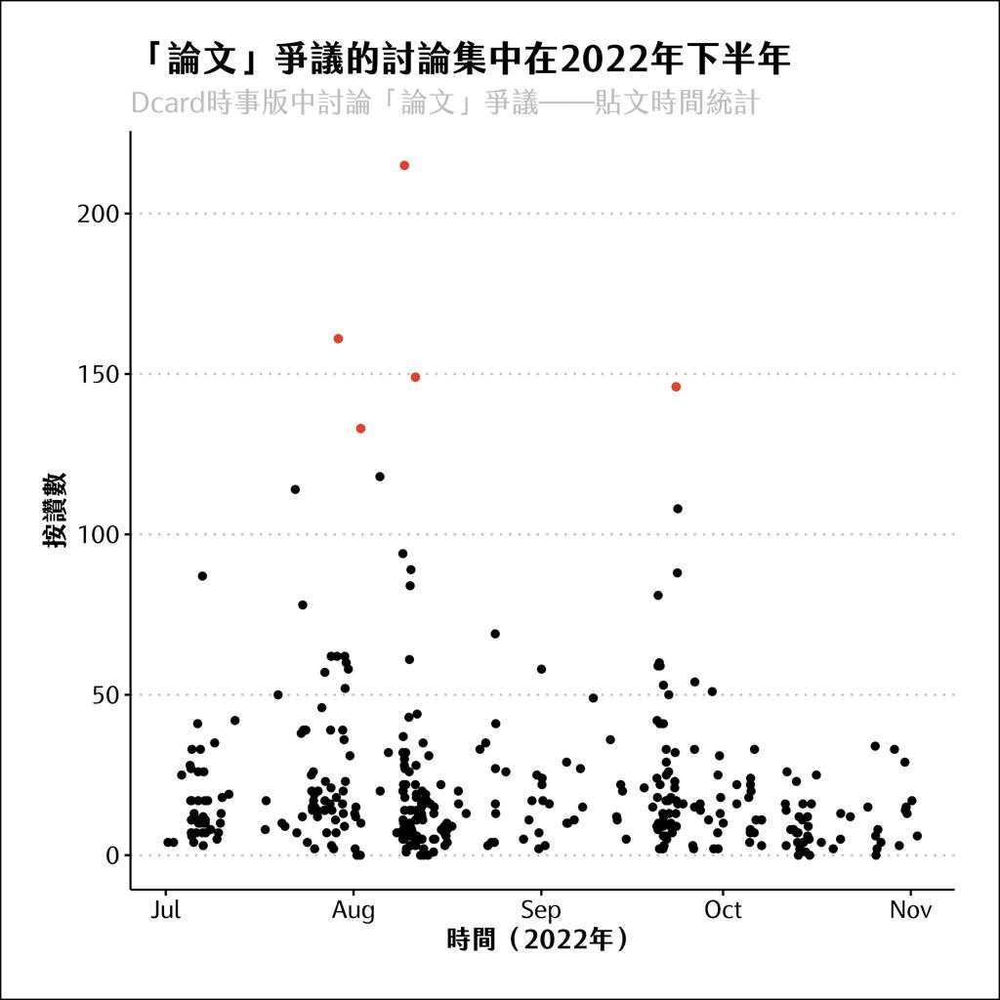
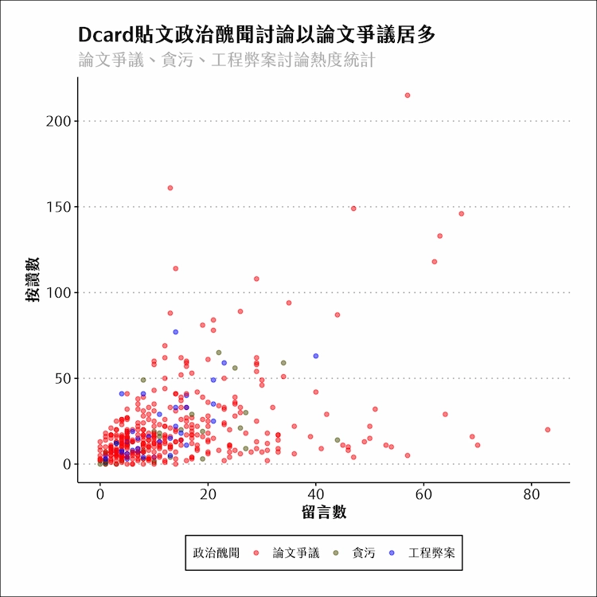
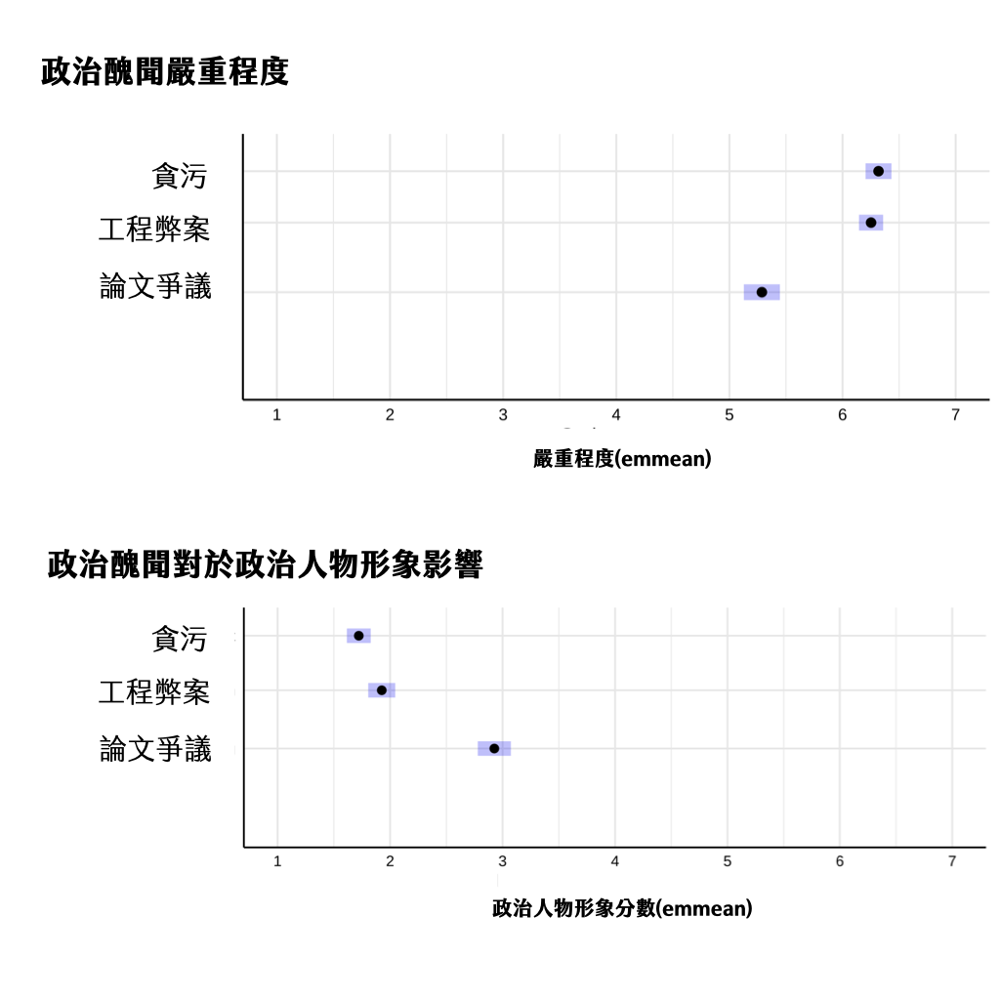

This article is written in Chinese.
2023.01.23 · 數據圖表 · 數位敘事
論文抄襲影響政治生涯？數據看臺灣政治醜聞對候選人形象影響
每當選舉期間，無論是政見、政績，抑或是個人在過去無論是公領域、私領域的生活，政治人物的所作所為皆會被放大檢視。2022年底的地方大選落幕，國民黨獲得大多數縣市長席次，民進黨得到空前的落敗。其中，許多名嘴與時事評論員直指「論文抄襲」等情況，民進黨無法在此次選舉中好好處理才導致落敗。 因此，我們好奇，在臺灣的政治醜聞可能有哪些？而這些政治醜聞如何影響候選人形象？
本篇是【網路時代的政治傳播】課程團體期末報告。並非個人獨立完成，新聞所上的好友王薇、蔡明翰也參與期末寫作與分析。 本文重新擷取部分報告結果，並加入 Dcard 數據分析，完成此文。
臺灣一年來的政治醜聞：論文事件、貪污、工程弊案
政治的極化現象加速了政治醜聞的產生，且醜聞的揭發本質上常常存在政黨競爭，因選民並不了解政治人物，因此若政治人物出現醜聞事件，很可能使得另外一方（政黨）受益。
過去的國外研究當中針對「政治醜聞（political scandals）」有相當多的定義，包含違反法律或倫理道德、濫用公共職權獲取直接或間接的物質、媒體將其宣傳為政治的緊迫問題、日復一日被展示和報導等。根據先前研究，本篇粗略且廣泛定義政治醜聞為：
- 政治人物的個人（不當）行為
- 存在法律瑕疵
藉此標準，我們透過 Dcard API 爬梳一年來（2021/10/10～2022/11/1）所有Dcard時事版文章，並將該論壇中挑選前四分之一討論最為熱烈（以留言數計）的文章，一一進行人工標記，看Dcard貼文中通常講述哪些臺灣的政治醜聞。
人工標記內容分析：所有醜聞中，「論文事件」在Dcard時事版論壇上討論最為熱烈。
我們發現近一年來，有關論文相關事件（抄襲、造假...）高達211篇，其次為貪污（31篇）與工程弊案（29篇）。

紅點為最多貼文的數篇，這些大多內容談及並非僅論文爭議，而會牽涉到其他政治醜聞，如貪污、工程弊案等。但多為攻擊/反對民進黨（泛綠）的言論。
論文相關事件幾乎佔滿整個論壇版面。林智堅、蔡英文為討論事件核心。
另外，工程弊案主要提及新竹火車站、新竹棒球場與桃園八德體育館屋頂坍塌爭議，大多討論集中在2022下半年。

政治醜聞與政治人物形象
接著，我們透過七點量表問卷，詢問民眾認為這些政治醜聞是否嚴重，及這些政治醜聞是否影響人們對於該政治人物的形象（因問卷投放因素，僅能觸及年輕族群（20-30歲左右））。
其中，政治人物形象的評估指標分為「政治人物的做事能力、品德認同、性格與親和力、經歷與成就」四大面向，最後我們將四個指標的分數平均，計算出候選人形象分數。我們詢問民眾：
問卷中的醜聞嚴重與否問題：
- <某個政治醜聞>事件的嚴重程度。（1~7分）
問卷中的政治人物形象問題：
- <某個政治醜聞>事件會影響我對於該政治人物能力上的認同。（1~7分）
- <某個政治醜聞>事件會影響我對於該政治人物品德上的認同。（1~7分）
- <某個政治醜聞>事件會影響我對該政治人物個性上的認同。（1~7分）
- <某個政治醜聞>事件會影響我對該政治人物經歷上的認同。（1~7分）
最終，我們回收258份問卷，發現這些政治醜聞確實嚴重，且某種程度上影響政治人物形象。
其中「論文抄襲」人們認為最不嚴重、政治人物形象影響最少，「貪污」人們認為最為嚴重、且影響政治人物形象最多。（具有統計顯著性）
人們認為政治醜聞的嚴重程度越高，政治人物形象影響也越多。

橫軸為填寫問卷的群眾之七點量表平均值。可以發現論文抄襲爭議，人們認為嚴重程度約在5.2分，形象分數仍可維持在近3分，但整體而言嚴重程度分數仍偏高、政治人物形象分數仍偏低。
研究限制
我們將問卷發放在Dcard與台大臉書交流版上，因此抽樣上僅能找到年輕族群，但無法代表所有年齡層的群眾。
本次研究取得Dcard一年內的資料，且僅限於時事版當中，因此也僅能知悉一年內臺灣所發生的新聞時事。